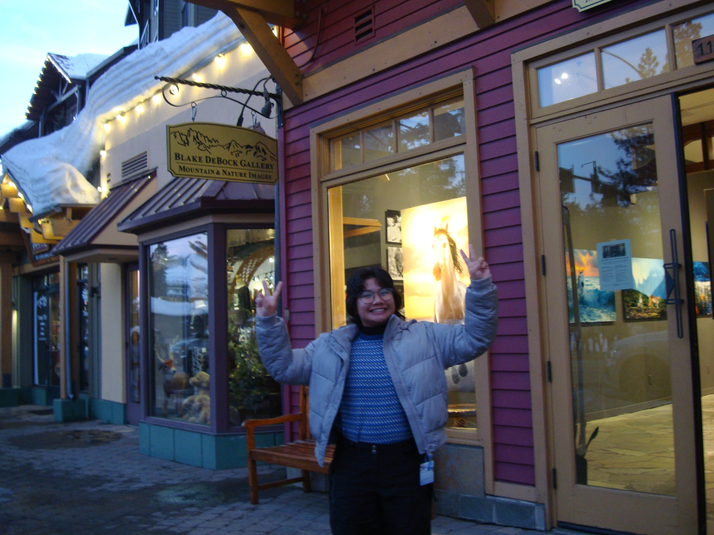
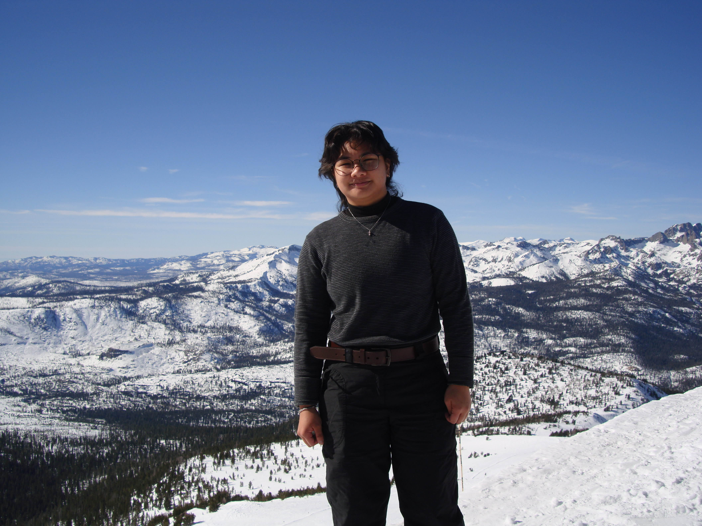
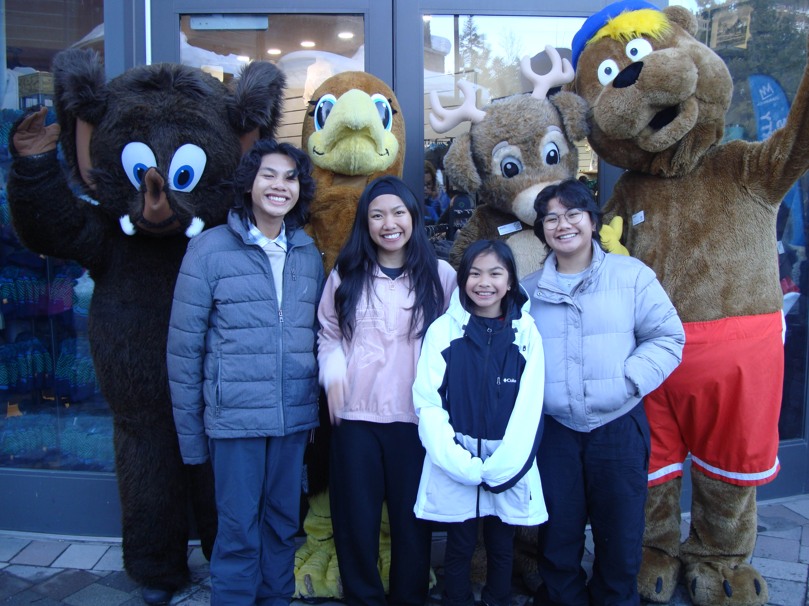

UCSD Email: rapresto@ucsd.edu
Personal Email: nadine.apresto@gmail.com
Hi! I'm Nadine (pronounced as Nuh-deen) and I'm a 4th year Computer Science Student at UCSD! I specifically have an interest in web development and UX/UI.
My other interests include cozy adventure/sandbox games such as Terraria, Luma Island, and Minecraft. I also enjoy playing games such as GTA V Online, Peak, and Roblox with my friends.
When studying, doing schoolwork, or just driving around, I love to listen to music artists like SAILORR, Yeat, Don Toliver, The Sundays, Omar Apollo, and Clairo. I like all musical genres!
I spend a lot of time with my family and friends! I'm the second oldest child in a family of 6! I have an older sister, a younger brother, and a younger sister. This past weekend, my family and I went to Mammoth Mountain for my parents' 26th wedding anniversary! I had lots of fun in the snow, I've never seen so much of it before!
Here are some pictures from Mammoth!
  